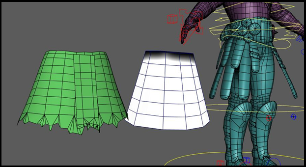
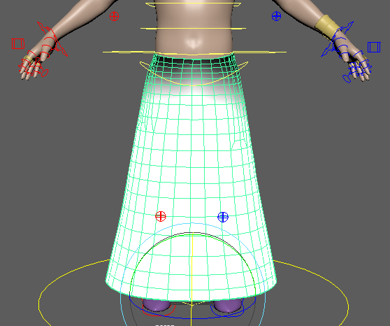
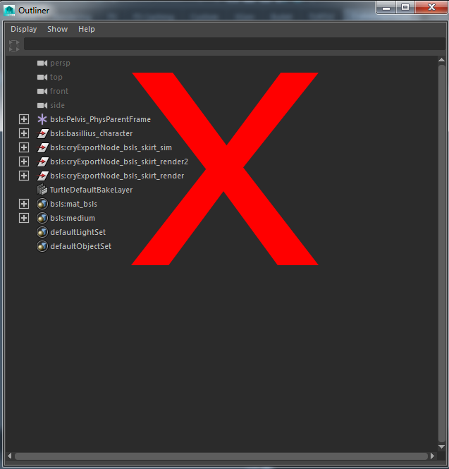
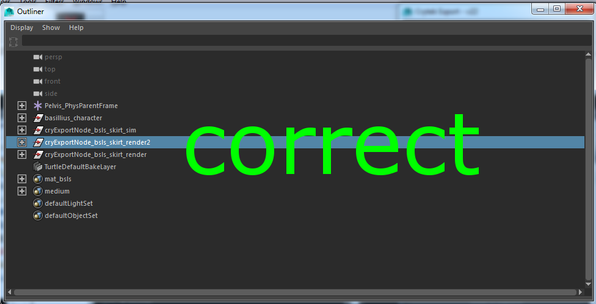
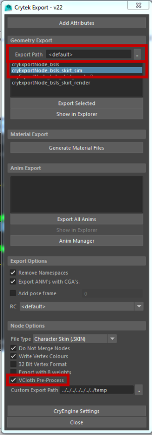
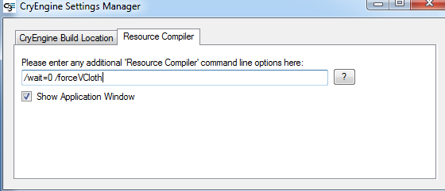

Overview
The VCloth in CRYENGINE needs two meshes: One mesh is used for simulation and one mesh is used for rendering - the latter mesh is wrapped according to the simulated mesh. While it's possible to use the same mesh, it is sometimes beneficial to tweak the simulation mesh according to your needs. Additionally, you might use a hi-res mesh for rendering and a low-res mesh for simulation, which would improve the overall performance considerably.
Make sure to load a level, or the VCloth attachment may not render properly.
Cloth Setup
Create a Simulation Mesh out of your Render Mesh. When doing this, consider the following:
- Cloth simulation in general is an expensive process, so the simulation mesh should be quite low-resolution.
- The best results are achieved with a clean and homogeneous edge flow, since the edges are used directly within the simulation.
- For performance reasons, the simulation mesh should have a lower resolution than the render mesh. A clean edge flow of the simulation mesh improves quality. The render mesh is used for visual representation and is animated by skinning according to the simulation mesh.
Pic1: A hi-res render mesh and a lo-res simulation mesh 
- The cloth mesh needs to be skinned according to the characters joints. This would be the same process as skinning the character, but instead of using the body, you would skin the cloth.
- Additionally, the cloth mesh needs vertex colors (greyscale) applied, which represent the constraints of attached vertices. Hence, vertex colors define the relationship between cloth physics and original skinning.
- Typically, virtual cloth is constrained around shoulders and other fast moving body parts, or in areas where cloth should not move physically, but is rather skinned. Black vertex colors indicates a full constraint (which basically means the according vertex positions are determined by skinning). White vertex colors indicate unconstrained vertices, whose movement is determined entirely by the simulation. Grey values in between indicate the strength of simulation vs. skinning. This way, fine transitions between fully skinned and fully simulated areas can be defined.
At the end of the process, your cloth should look something like this in Maya:
Pic2: Cloth ready to be exported 
Cloth Export to CRYENGINE
CRYENGINE needs some additional metadata for cloth meshes. These metadata can be generated by the Resource Compiler (RC) of the CRYENGINE. However, if the metadata is missing, these data sets are generated by the CRYENGINE on the fly - which would result in stuttering at run-time, since the pre-process is probably too expensive for a smooth run-time experience. Therefore, it is strongly recommended to use one of the following two exporting methods to include the metadata in the exported skin file.
If you have the latest exporter-plugin, the exporting process is fairly simple and is described in Method 1. If your plugin is outdated, you will want to use Method 2.
Preparation: Using correct namespace
The simulation and render nodes which will be exported must be located in Maya's root namespace since the key cryExportNode must appear in the beginning of the node's name. Therefore, if you have been using namespaces, you need to merge them down to root.
Pic3: Incorrect namepace 
To merge the namespaces down to the root, execute the following steps:
- click Windows -> General editors -> Namespace Editor
- select the intermediate namespace and click delete
- click Merge with Root
Now the namespaces are merged and you can continue with the following steps to export the cloth.
Pic4: Correct namespace 
Method 1: Export - using Plugin
- Select the cloth simulation mesh, you would like to export
- Open the "Export" plugin from the Crytek Maya Plugins:
Pic5: Crytek Maya plugin bar
- In the Exporter:
- Set Export Path (must be relative)
- Select the simulation mesh
- Check the VCloth Pre-Process checkbox
Pic6: Crytek Exporter settings - Method 1 
The render mesh can be exported the same way, but VCloth Pre-Process flag is not needed for exporting, resulting in smaller file size.
Method 2: Export - using RC command-line commands
- Select the cloth simulation mesh you would like to export
- Open the Export plugin from the Crytek Maya Plugins:
Pic7: Crytek Maya plugin bar
In the Exporter:
- Set Export Path
- Select the simulation mesh
- Set the Custom Export Path
- Open CRYENGINE Settings
In the Resource Compiler tab, add the command line option: "/forceVCloth": 
Pic8: Adding /forceVCloth in the CryEngine Settings
Now close the CRYENGINE Settings Manager and export the simulation mesh by clicking Export Selected.
The render mesh can be exported the same way, but without specifying the "/forceVCloth" command-line option.
Related Pages
For more information on how to use VCloth, check the following pages: